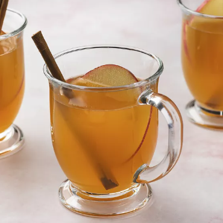

Wassail

Description
Wassail is a hot mulled cider with Nordic roots. It's traditionally enjoyed during wassailing, which is the ancient Yuletide practice of singing door-to-door. The ritual began as a way to ensure a good cider apple harvest for the following year and it persists today (in the form of caroling).
Ingredients
- 2 gallons apple cider
- 2 cups fresh orange juice
- 1 cup lemon juice
- 1 cup pineapple juice
- 1 cinnamon stick, broken into pieces
- 1 teaspoon whole cloves
Steps
- Stir apple cider, orange juice, sugar, lemon juice, and pineapple juice together in a large pot over medium-low heat.
- Place cinnamon and cloves in a tea ball and add to apple cider mixture; simmer until warmed through, about 15 minutes. Serve from the pot with a large ladle.